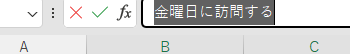

文章をコピーしたい

文章だけを別の欄へ移す準備です。コピーしても元の文章は残ります。
操作手順
- 練習用の空欄に「金曜日に訪問する」と入力し、Enter で確定します。
- その欄をクリックし、画面上部の数式バー（欄の中身が表示される横長の場所）で文章の先頭から末尾までドラッグします。
- Ctrl＋C を押します。画面はほとんど変わりません。
- Esc で編集を終えます。別の空欄をダブルクリックして縦線を表示します。
- Ctrl＋V を押し、Enter で確定します。元の欄と新しい欄の両方に同じ文章があれば成功です。
できたか確認
元の欄と貼り付けた欄の両方に「金曜日に訪問する」と表示されていますか。
注意点
セルを1回クリックしてコピーすると、文字に加えて書式などもコピー対象になります。